Tek Atölye. Dokuz Uzmanlık.
DualSense'in en küçük vidasından PS5 anakartına kadar her şeyi içerden tanıyoruz. Detaylı servis kategorilerimizi incele — sorunun olduğu kategoriye bir tık uzaktasın.
DualSense'in en küçük vidasından PS5 anakartına kadar her şeyi içerden tanıyoruz. Detaylı servis kategorilerimizi incele — sorunun olduğu kategoriye bir tık uzaktasın.
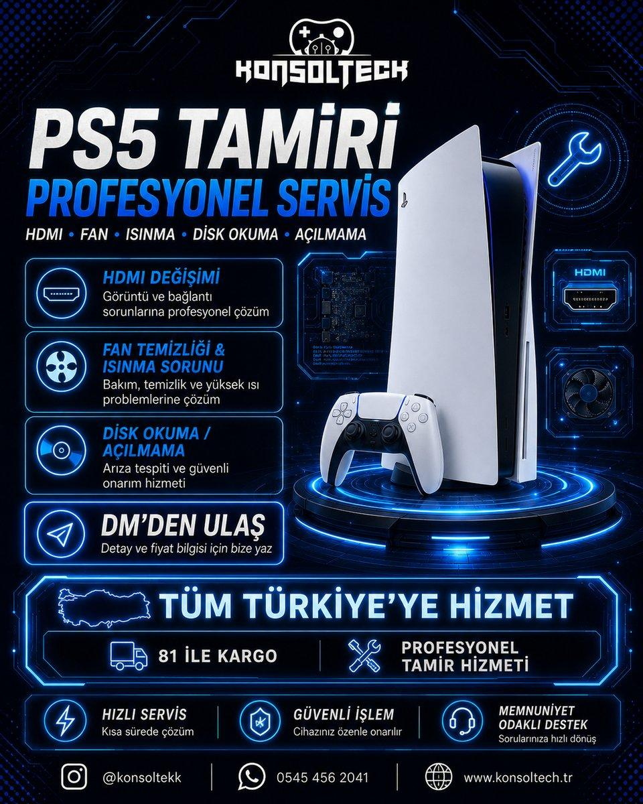
Joystick'in karaktersiz hareketine etkili çözüm. Modül değişimi, kontak temizliği ve hassas kalibrasyon ile drift problemi giderilir. Standart veya manyetik upgrade — bütçene göre çözüm.
İşlem Öncesi Bilgi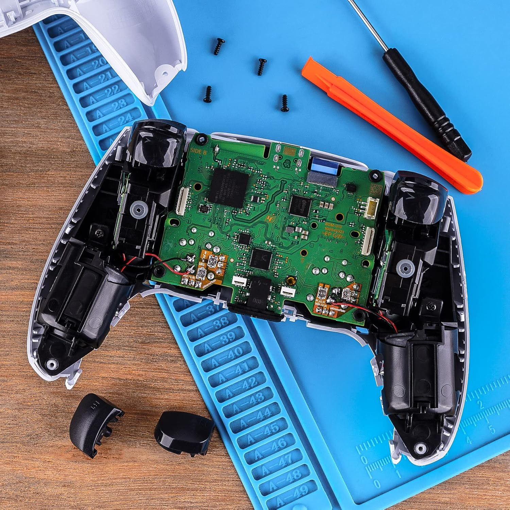
Hall Effect ve TMR manyetik konum ölçümü kullanır. Modül uyumluluğu, montaj ve kalibrasyon birlikte değerlendirilir. Mekanik aşınma, darbe veya başka arızalar yine oluşabilir; ömür boyu sıfır drift sözü verilmez.
Premium Upgrade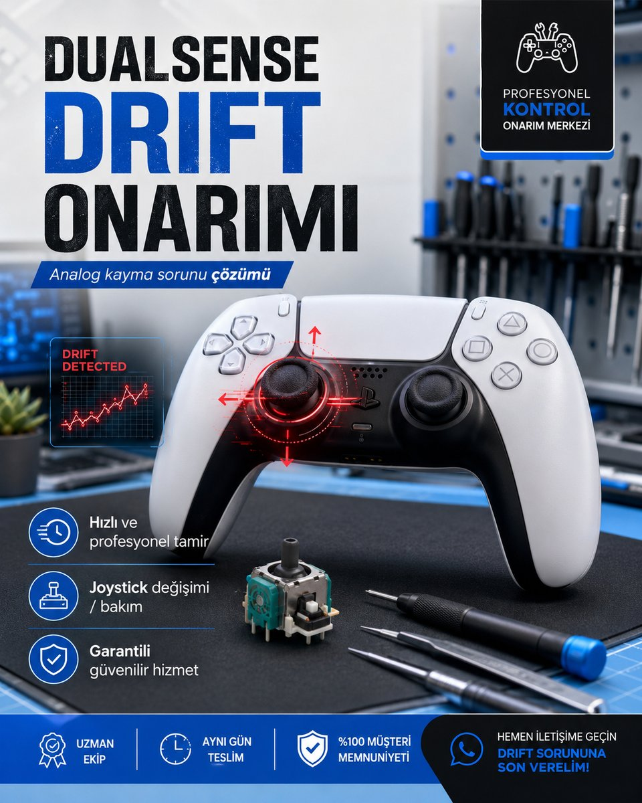
Hall Effect ve TMR manyetik konum ölçümü kullanır. Modül uyumluluğu, montaj ve kalibrasyon birlikte değerlendirilir. Mekanik aşınma, darbe veya başka arızalar yine oluşabilir; ömür boyu sıfır drift sözü verilmez.
Tahmini Süre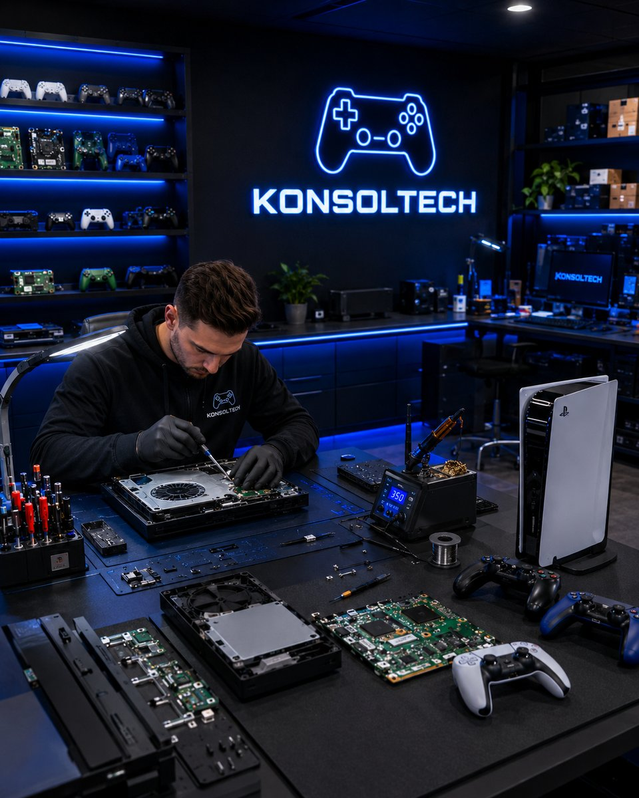
Adaptif tetik mekanizmasında yay kopması, kademeli sertleşme veya basınca tepkisizlik sorunları. Mekanizma değişimi ve geri bildirim motorunun hassas ayarı ile ilgili işlevler kontrol edilir.
Mekanizma Yenileme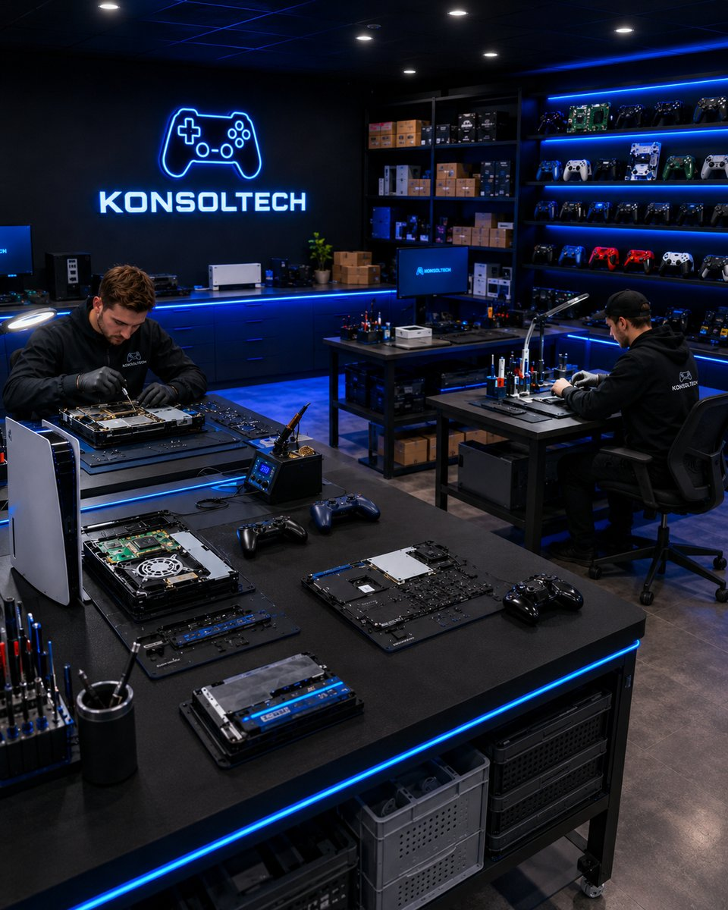
Cihaz modeli ve belirtiler üzerinden ön bilgi verilir. İnceleme sonrasında yapılacak işlem, ücret, tahmini süre ve garanti kapsamı paylaşılır. İşlem ve ücret onayından sonra onarıma geçilir.
Modele Uygun Parça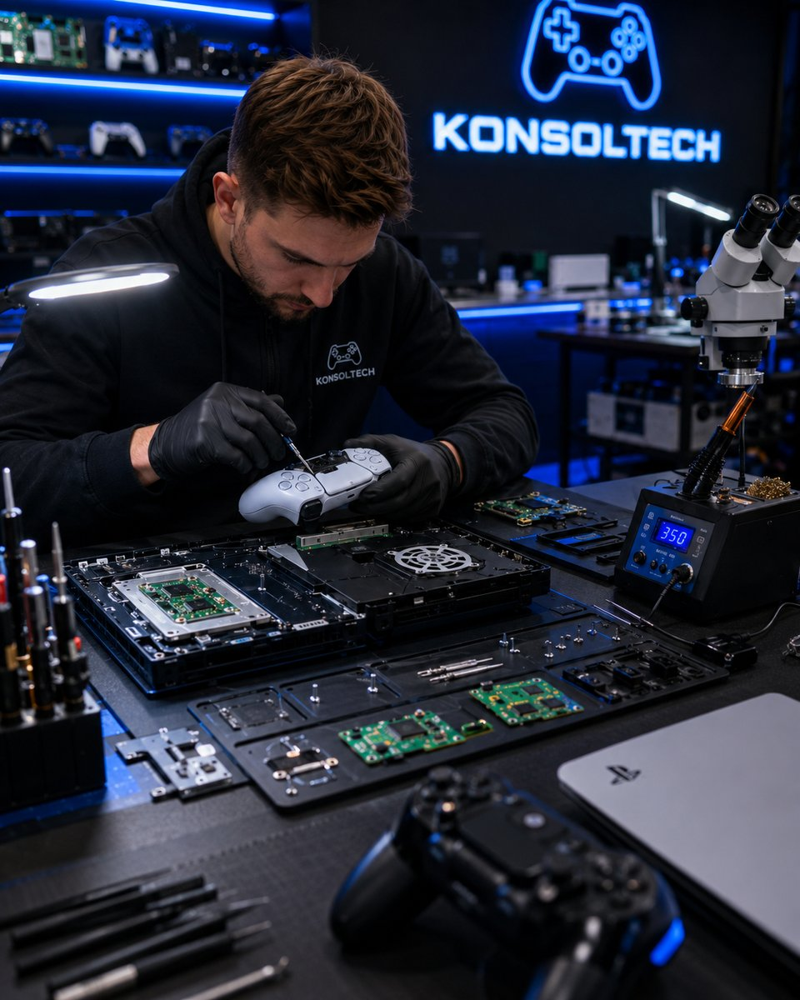
Cihaz modeli ve belirtiler üzerinden ön bilgi verilir. İnceleme sonrasında yapılacak işlem, ücret, tahmini süre ve garanti kapsamı paylaşılır. İşlem ve ücret onayından sonra onarıma geçilir.
Mikro Lehim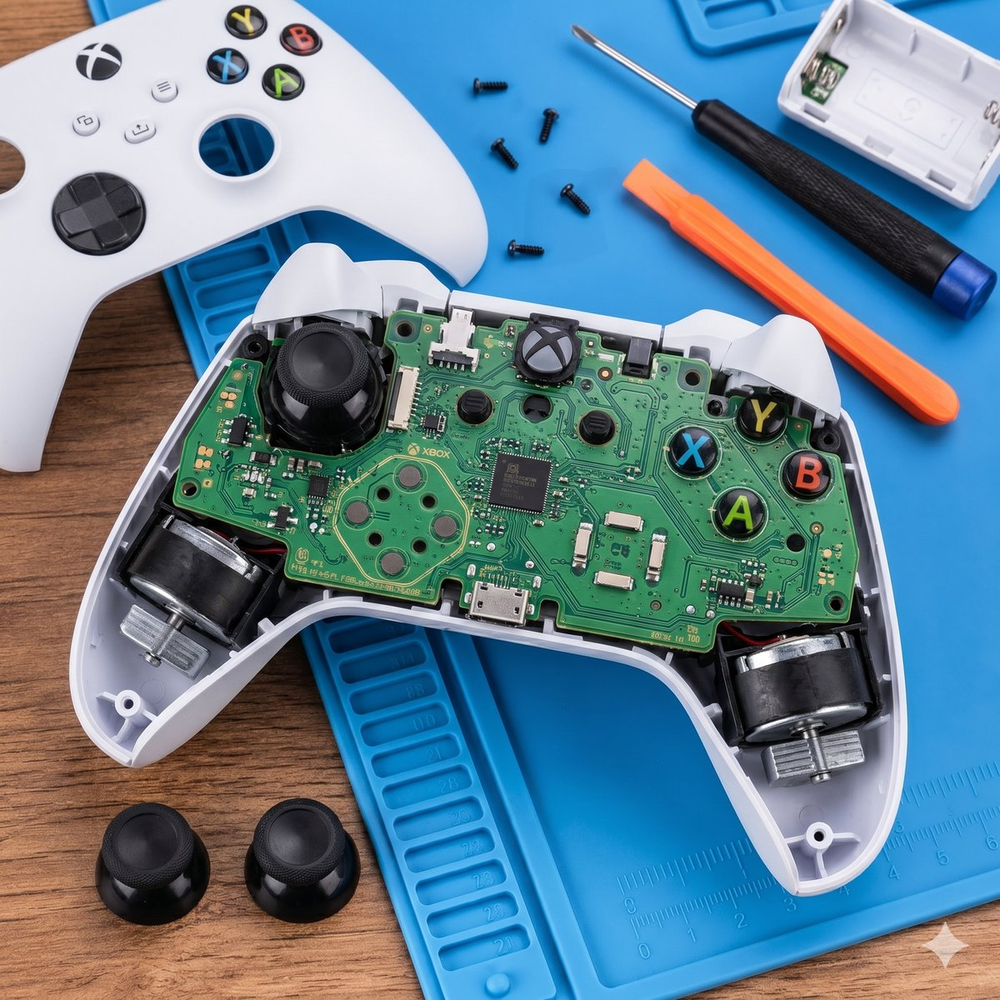
Cihaz modeli ve belirtiler üzerinden ön bilgi verilir. İnceleme sonrasında yapılacak işlem, ücret, tahmini süre ve garanti kapsamı paylaşılır. İşlem ve ücret onayından sonra onarıma geçilir.
Uzman İşçilik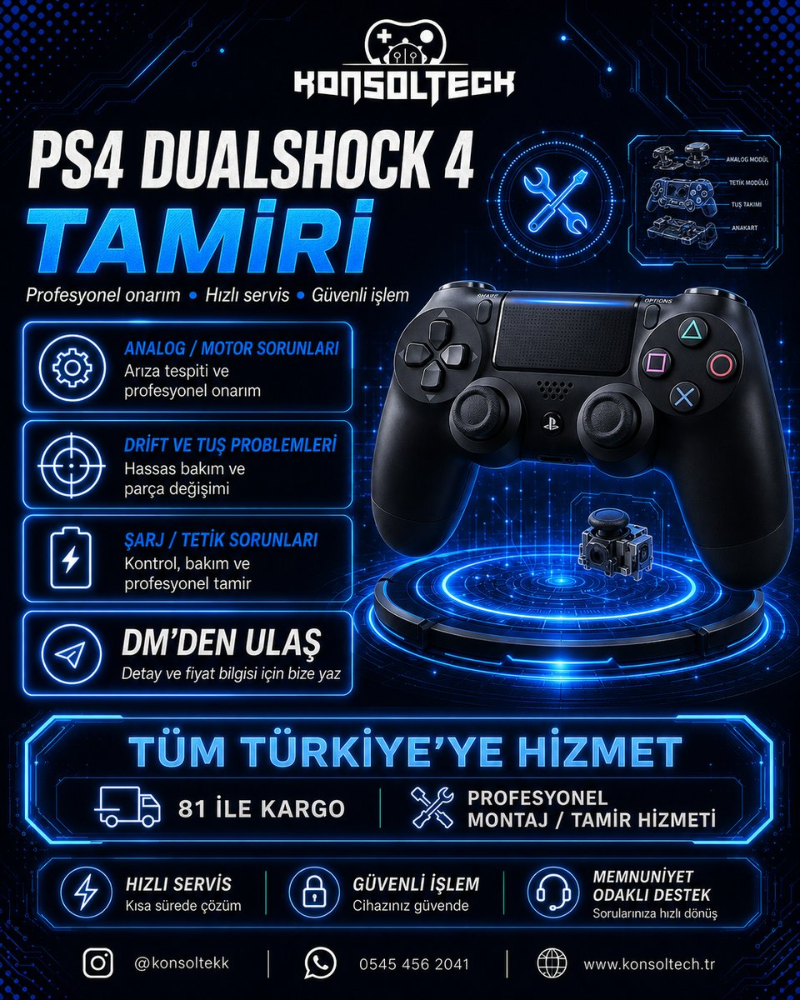
Sıvı temasında cihazı çalıştırmayı ve şarj etmeyi bırak. Hasarın kapsamı incelenerek onarım yapılabilirliği ve işlem koşulları açıklanır.
Acil MüdahaleAdaptif haptic motor arızası, titreşim sesi veya tepkisizliği için motor değişimi ve hassas kalibrasyon. PS5'in immersive geri bildirim deneyimini ilk günkü gibi geri kazan.
Hassas AyarHall Effect ve TMR manyetik konum ölçümü kullanır. Modül uyumluluğu, montaj ve kalibrasyon birlikte değerlendirilir. Mekanik aşınma, darbe veya başka arızalar yine oluşabilir; ömür boyu sıfır drift sözü verilmez.
Drift; sen kola dokunmazken karakterin ya da imlecin kendiliğinden hareket etmesidir. Genelde tek yöne sürüklenme, nişan alırken kayma veya menülerde otomatik gezinme olarak fark edilir.
Klasik DualSense analoglarında potansiyometre denen temaslı bir parça vardır. Zamanla bu yüzey aşınır, içine toz/karbon dolar ve sensör "sıfır" noktasını şaşırır. Yani drift çoğu zaman kullanıcı hatası değil, parçanın doğal ömrüdür.
Önce oyun içi ayarları, bağlantıyı ve güncellemeleri kontrol et. Sorun sürüyorsa kolun modelini ve belirtileri paylaş; modül, bağlantı ve kalibrasyon birlikte değerlendirilir.
Hall Effect ve TMR manyetik konum ölçümü kullanır. Modül uyumluluğu, montaj ve kalibrasyon birlikte değerlendirilir. Mekanik aşınma, darbe veya başka arızalar yine oluşabilir; ömür boyu sıfır drift sözü verilmez.
Teslim süresi arızaya, parça durumuna ve servis yoğunluğuna göre inceleme sonrasında açıklanır. Uygun işlemlerde aynı gün teslim mümkün olabilir; kesin süre için bizimle görüş.
Hall Effect ve TMR manyetik konum ölçümü kullanır. Modül uyumluluğu, montaj ve kalibrasyon birlikte değerlendirilir. Mekanik aşınma, darbe veya başka arızalar yine oluşabilir; ömür boyu sıfır drift sözü verilmez.
Hall Effect ve TMR manyetik konum ölçümü kullanır. Modül uyumluluğu, montaj ve kalibrasyon birlikte değerlendirilir. Mekanik aşınma, darbe veya başka arızalar yine oluşabilir; ömür boyu sıfır drift sözü verilmez.
GuliKit TMR paketi iki motor ve iki topuz içerir. 12 ay tam garanti ilgili işleme aittir; kapsam ve kullanım koşulları işlem öncesinde açıklanır.
Kol sürümünü, kullanımını ve talebini paylaş. Standart analog, Hall Effect, TMR veya GuliKit seçeneğini uyumluluk ve kapsamıyla birlikte değerlendirelim.
Orijinal analog modül değişimi, standart analog hissini korumak isteyenler için bir seçenektir. Montaj ve kalibrasyon sonrası işlev kontrolü yapılır.
DualSense'in R2/L2 tetikleri, oyuna göre direnç veren "adaptive trigger" mekanizmasına sahiptir. İçindeki küçük dişli ve motor sistemi zorlanınca his bozulur.
Tetik bastıkça gevşiyor, takılıyor ya da eski "klik" hissini vermiyorsa; yay ve mekanizma değişimiyle ilgili işlevler kontrol edilir.
X, kare, üçgen veya yön tuşları basınca takılıyor ya da bazen algılamıyorsa, genelde silikon ped veya temas yüzeyi sorunludur. Temizlik veya parça değişimiyle çözülür.
Touchpad tıklamıyor; PS, Create/Share veya Options tuşları çalışmıyorsa, kart üzerindeki ilgili buton ya da flex kablo onarılır veya değiştirilir.
Bataryalar kullanım ve yaşa bağlı kapasite kaybedebilir. Kısa kullanım süresi farklı nedenlerden de kaynaklanabileceği için cihaz değerlendirilir.
Cihaz modeli ve belirtiler üzerinden ön bilgi verilir. İnceleme sonrasında yapılacak işlem, ücret, tahmini süre ve garanti kapsamı paylaşılır. İşlem ve ücret onayından sonra onarıma geçilir.
Şarj ve bağlantı sorunları kablo, soket veya ilgili devreden kaynaklanabilir. Gereken işlem inceleme sonrasında belirlenir; onarımın ardından ilgili işlevler kontrol edilir.
Sorun kablo, soket, batarya veya şarj devresinde olabilir. Cihaz incelenerek gereken işlem ve ücret açıklanır.
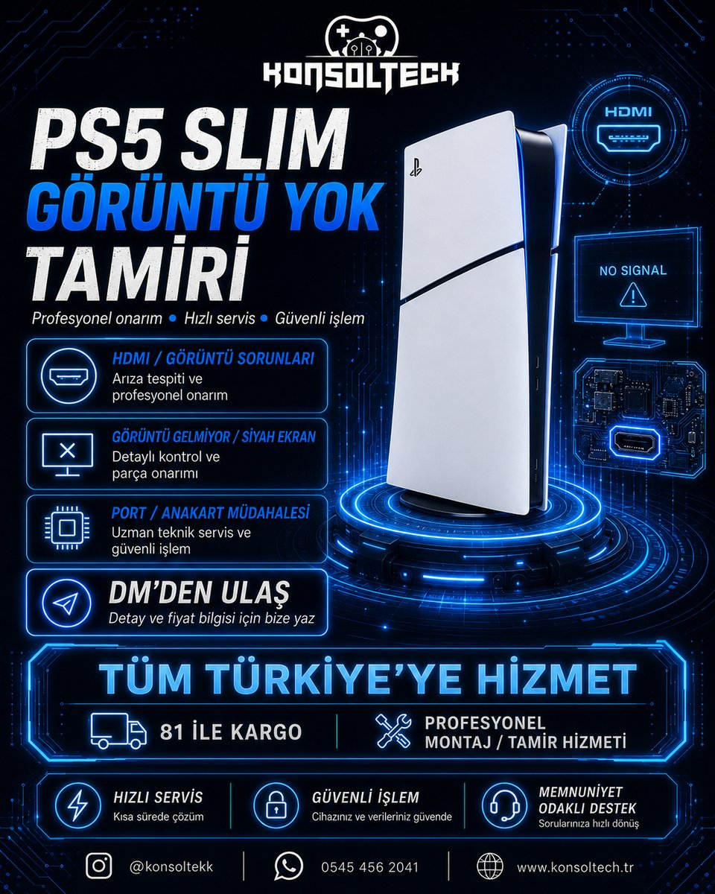
TV'ye görüntü gitmiyor, sinyal yok veya ekran karlanıyorsa çoğu zaman HDMI portu ya da HDMI IC'si sorunludur. Mikro lehimle onarılır.
Konsol gürültülü çalışıyor, ısınıyor veya kapanıyorsa içeride toz birikmiş olabilir. Detaylı iç temizlik performansı geri getirir.
Yıllar içinde kuruyan termal macun ısı transferini bozar. Güvenli ve uygun termal macun yenilemesiyle sıcaklıklar düşer, fan sesi azalır.
Disk takılıyor, çıkmıyor veya okunmuyorsa disk sürücü mekanizması ve kalibrasyonu değerlendirilir.
Konsol açılmıyor, beep sesi veriyor veya ışık yanıp sönüyorsa anakart seviyesinde tanı gerekir. Hata kaynağını adım adım tespit ederiz.
Kısa devre, sıvı teması veya bileşen arızalarında onarım yapılabilirliği inceleme sonrasında belirlenir.
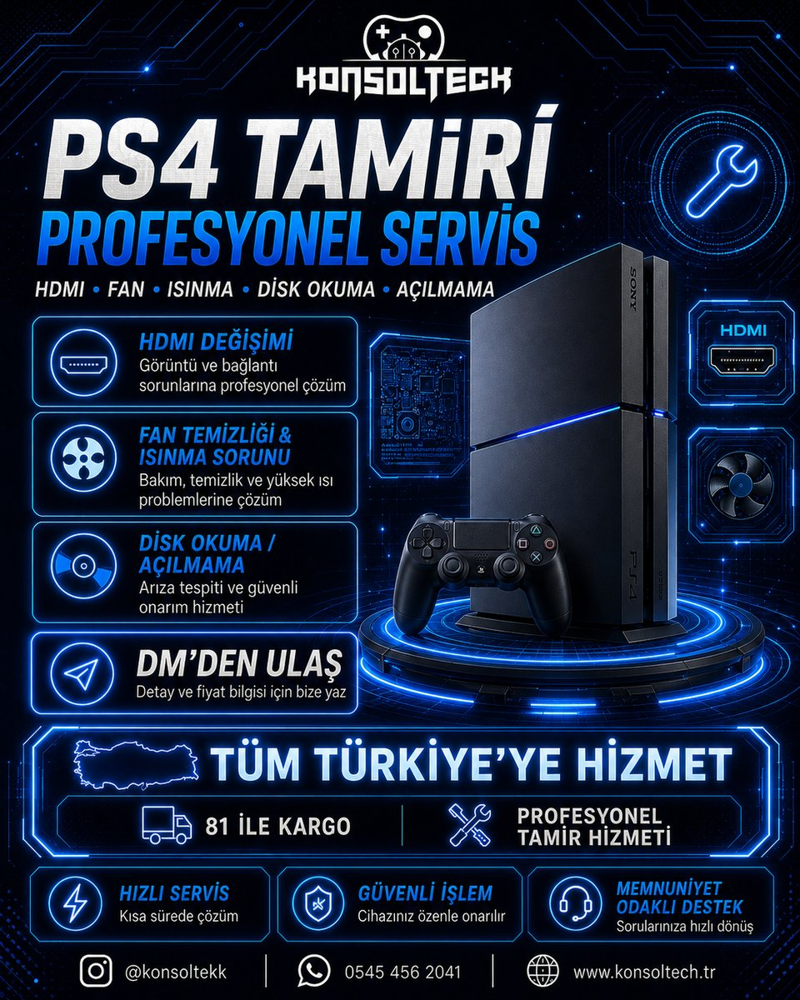
PS4 kolundaki drift ve analog sorunları da aynı mantıkla çözülür: modül değişimi ve kalibrasyon. İstersen Hall Effect upgrade DualShock 4'e de uygulanabilir.
PS4 ve PS4 Pro'da görüntü gitmemesinin en yaygın sebebi kırılmış HDMI portudur; mikro lehimle yenilenir.
"Uçak sesi" çıkaran PS4'ler genelde toz ve kurumuş termal macundan muzdariptir. İç temizlik ve macun yenileme sessizliği geri getirir.
Güç sorunları, mavi/beyaz ışık takılması gibi durumlarda güç katı ve anakart kontrol edilir.
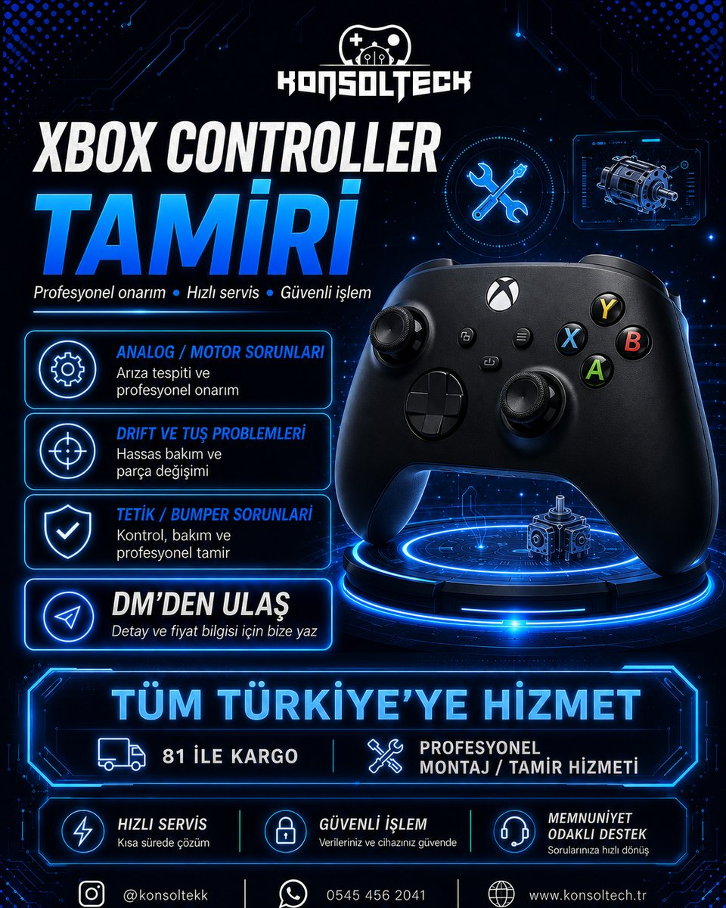
Xbox Series ve One kollarındaki sol/sağ analog drift'i de modül değişimiyle çözülür; istersen Hall Effect upgrade uygulanır.
Tetikler tepki vermiyor, takılıyor veya sürekli basılı algılanıyorsa mekanizma ve sensör onarılır.
Sık kullanımdan kırılan veya tıklamayan bumper (LB/RB) tuşları değiştirilir.
Hall Effect ve TMR manyetik konum ölçümü kullanır. Modül uyumluluğu, montaj ve kalibrasyon birlikte değerlendirilir. Mekanik aşınma, darbe veya başka arızalar yine oluşabilir; ömür boyu sıfır drift sözü verilmez.
Su, çay, kola döküldüyse her dakika kritik: hemen kullanmayı ve şarj etmeyi bırak, cihazı kapat ve kurut.
En kritik kural: Islak cihazı çalıştırma ve şarj etme — elektrik verildiğinde kısa devre ve kalıcı hasar riski katlanır. Kuru ortamda beklet, en kısa sürede atölyeye ulaştır.
Sıvı temasında cihazı çalıştırmayı ve şarj etmeyi bırak. Hasarın kapsamı incelenir; uygulanacak temizlik veya onarım işlemi öncesinde bilgi verilir.
Bağlantı ve bileşen sorunları cihazın durumuna göre değerlendirilir. Anakart onarımının mümkün olup olmadığı ve maliyeti inceleme sonrasında açıklanır.
Onarım maliyeti arıza ve parça gereksinimine göre değişir. İnceleme sonrası teklif alarak onarım veya cihaz değişimi arasında karar verebilirsin.
İşlem cihazın modeline ve arızasına göre değerlendirilir. Hangi parçanın değişeceği, montaj kapsamı ve kontrol adımları önceden açıklanır.
Hall Effect ve TMR manyetik konum ölçümü kullanır. Modül uyumluluğu, montaj ve kalibrasyon birlikte değerlendirilir. Mekanik aşınma, darbe veya başka arızalar yine oluşabilir; ömür boyu sıfır drift sözü verilmez.
Her onarımdan sonra kol kapsamlı kalibrasyondan geçer; ölü bölge (deadzone) optimize edilir ve drift testi yapılır.
Parça değişimi ve ilgili bağlantılar cihazın durumuna göre değerlendirilir. Onarım yapılabilirliği inceleme sonrasında netleşir.
Cihaz modeli ve belirtiler üzerinden ön bilgi verilir. İnceleme sonrasında yapılacak işlem, ücret, tahmini süre ve garanti kapsamı paylaşılır. İşlem ve ücret onayından sonra onarıma geçilir.
Aras Kargo anlaşma kodu 2604805651534 ile bize gönderimde şubede ücret ödemezsin. Dönüş kargosu ve onarım koşulları ayrıca netleştirilir.
Teslim süresi arızaya, parça durumuna ve servis yoğunluğuna göre inceleme sonrasında açıklanır. Uygun işlemlerde aynı gün teslim mümkün olabilir; kesin süre için bizimle görüş.
GuliKit TMR paketi iki motor ve iki topuz içerir. 12 ay tam garanti ilgili onarım içindir; kapsam ve kullanım koşulları işlem öncesinde açıklanır.
İnceleme sonrası işlem ve ücret paylaşılır. Ek bir sorun görülürse ayrıca bilgi verilir ve onay alınır.
Karar, arıza kapsamına ve güncel onarım teklifine bağlıdır. Kolun durumunu değerlendirdikten sonra gerekli işlemi ve toplam maliyeti konuşalım.
DualSense, DualSense Edge, DualShock 4, Xbox Series X|S ve Xbox One kolları; PS5, PS5 Slim ve PS4 konsolları.
Orijinal analog: 3 ay parça; Hall Effect: 6 ay tam; TMR: 6 ay parça; GuliKit TMR: 12 ay tam garanti. Garanti ilgili işleme aittir; kapsam ve kullanım koşulları işlem öncesinde açıklanır.
Kol tamirinde kişisel veri saklanmaz. Konsol onarımlarında hesap ve veri güvenliğin önceliklidir; gereksiz hiçbir işleme dokunulmaz.
Cihaz modeli ve belirtiler üzerinden ön bilgi verilir. İnceleme sonrasında yapılacak işlem, ücret, tahmini süre ve garanti kapsamı paylaşılır. İşlem ve ücret onayından sonra onarıma geçilir.
WhatsApp'tan Yaz Ara